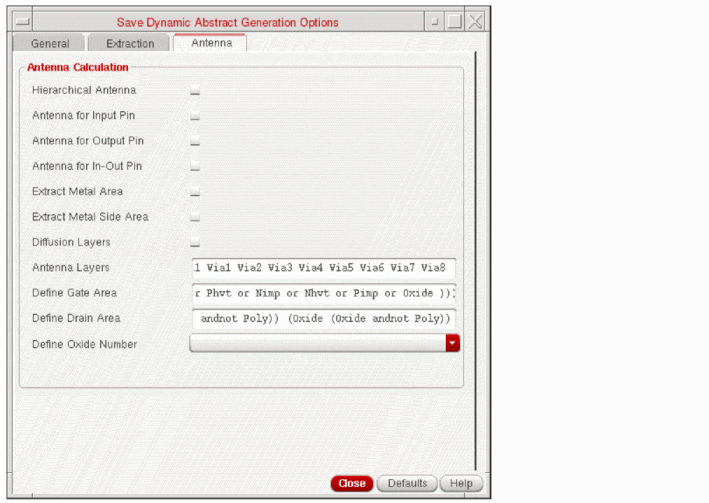

Specifying Antenna Options for Dynamic Abstraction
You can specify antenna options for dynamic Abstraction using the Save Dynamic Abstract Generation Options form. By using the options on the Antenna tab, you can create process antenna data for Pcells. By default, all the check boxes on this tab are deselected.

- In the Antenna Calculation section, use the following options to computes the process antenna data for a given layer.
- Select the Diffusion Layers check box to extract diffusion layers specified in the technology file.
- In the Antenna Layers field, specify the layers for which you want to calculate their process antenna data.
-
In the Define Gate Area and Define Drain Area fields, specify the layer-geometry specification for defining the gate and drain geometry regions, respectively. An example that defines the gate area region is as follows:
(poly and fiff)
An example that defines the drain region area is as follows:(diff andnot poly)
-
From the Define Oxide Number drop-down list, select the oxide model to be extracted for a particular diffusion layer. The list contains four oxide types:
Oxide1,Oxide2,Oxide3, andOxide4. You can apply a unique oxide model for up to four diffusion layers. - Click Close after setting the required fields.
Related Topics
Save Dynamic Abstract Generation Options Form
Return to top